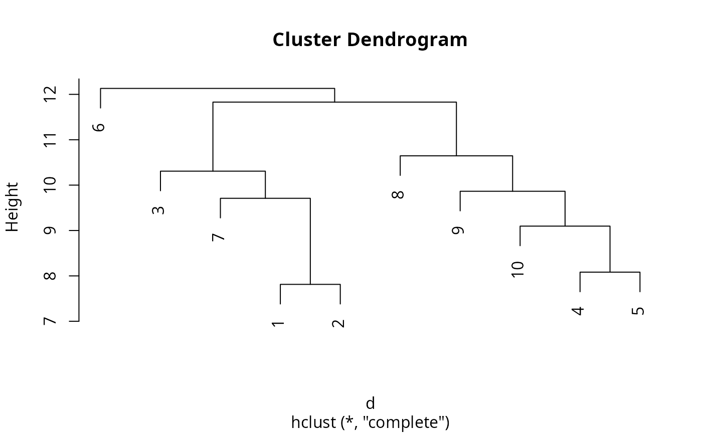

Compute a distance matrix for compositional data, including the Aitchison
distance as an extension of dist.
Arguments
- x
A data matrix whose rows are compositions.
- method
The distance measure to be used. This must be one of
"aitchison"(or"L2"),"euclidean","maximum","manhattan","canberra","binary", or"minkowski". Any unambiguous abbreviation can be given.- ...
Additional arguments passed to
dist.
Examples
X <- exp(matrix(rnorm(10 * 50), ncol = 50, nrow = 10))
(d <- dist_coda(X, method = "aitchison"))
#> 1 2 3 4 5 6
#> 2 7.813107
#> 3 10.212683 9.929615
#> 4 9.871527 8.698693 9.430012
#> 5 10.072645 8.373155 11.801588 8.082338
#> 6 10.632419 10.903635 12.130938 10.343419 10.123702
#> 7 9.709627 8.117284 10.307579 9.324034 9.366562 10.187693
#> 8 10.018589 10.327228 10.768874 9.824775 9.891643 12.042523
#> 9 10.054564 8.465856 11.829439 9.528568 9.668205 11.746114
#> 10 10.894565 9.357433 11.567295 8.624922 9.096691 9.373297
#> 7 8 9
#> 2
#> 3
#> 4
#> 5
#> 6
#> 7
#> 8 10.952053
#> 9 9.993111 10.645931
#> 10 9.815910 9.283695 9.864643
plot(hclust(d))

# In contrast to Euclidean distance
dist(rbind(c(1, 1, 1), c(100, 100, 100)), method = "euc")
#> 1
#> 2 171.473
# Using Aitchison distance, only relative information is of importance
dist_coda(rbind(c(1, 1, 1), c(100, 100, 100)), method = "ait")
#> 1
#> 2 8.14626e-16